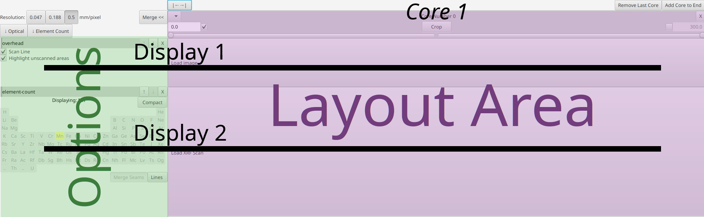
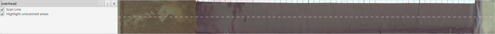
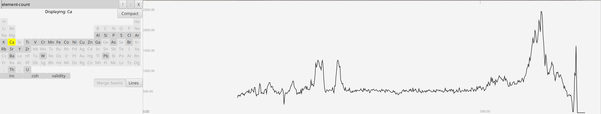
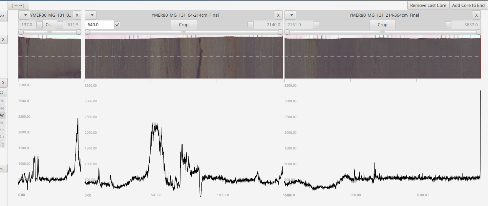
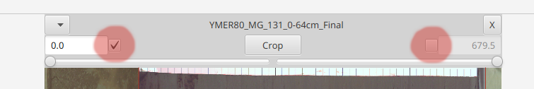
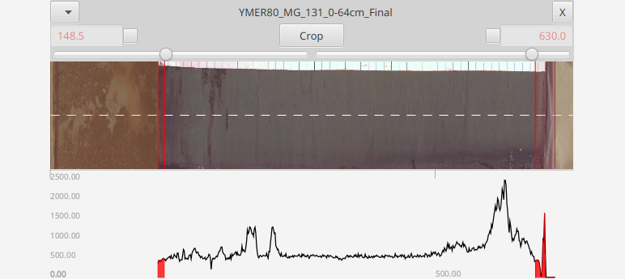

Corascope: Manual
Table of Contents
Please see the Quick Start for an walk through of how to use the software. This manual walks through break down how the different parts of the software work together to allow you to manipulate core scans.
 Features
Features
- ITRAX core scan inspection
- Find scanning issues and identify regions of interest
- Crop ITRAX Cores scans
- Remove extraneous data, overscans and regions of bad data
- Merge ITRAX Core scans
- Glue back long core sections that needed to be scanned in sections so that you can go back to reasoning about core depth positions
- Maintaining ITRAX format
- All input and output conform to the ITRAX formats so that data that has been cropped and merged is in the familiar format on output
 Program layout
Program layout

- top area with a few global options
- Options area on the side which has different toggles and buttons
- Layout Area with an empty core with Load buttons.
Displays
On launch there are two displays:
- Overhead

- Element Count

Each horizontal row corresponds to one display
There is always one options area on the side and then a display area for each core. Changing display options never changes any of the underlying data.
Note: When data is unavailable the display either displays an error or reverts to a "Load" button - prompting the user to load in the necessary file.
Cores

The data is stored in cores. These are organized along vertical columns in the core layout area which you can navigate around using your mouse - scroll to zoom and drag to pan. The "|←→|" button at top will help you recenter/zoom-to-fit the cores. The core layout area is organized from left to right, from shallow to deep.
Additional empty cores can be added with the "Add Core to End" button in the upper right corner.
ITRAX optical scans are stored in a right-to-left image file. The program expects scans in the ITRAX format and it will output in the ITRAX format, but they will be displayed horizontally flipped in a left-to-right canonical and visually intuitive ordering

At the top of each row is the core name, menu and [X] Delete button - the row below that the core start and end points (in mm) and has additional options for cropping the core.
Note: The core name is derived from the XRF file name
When you drag/load data into a display area the data is being loading into the corresponding column's core and when that core is removed (by hitting the 'X' in the upper right hand corner) then its associated data is permanently removed from the program
 Adjusting Cores
Adjusting Cores
Cores are adjusted through the core header
Core Position
Pinning

selecting either of these check boxes will pin either the top or bottom end so that it may be adjusted. Based on the input value the opposite end will automatically adjust (since the total length remains static during this operation). To highlight this, the other end becomes greyed out and can't be changed
Note: If neither end is checked then the core ends are floating. This will be important when cropping
Note: When an optical image is loaded the input values will be automatically rounded to multiples of the pixel size. This is so that repositioning (and subsequent cropping) produces cores that can be immediately merged.
Cropping
Core cropping is accomplished by using two sliders on either side of the header.

An immediate visual feed will be observed in the displays to "preview" the operation. Once you hit crop the ends are removed. If either end is pinned then that end will remain at that position even after a crop. Post-crop end positions are previewed in red in the header
If the top/bottom positions are not pinned and are left floating, then the core is cropped such as the to leave the data points in their original locations
Note: The sliders are limited to cropping off at most 50% - so if you have an very unusual scan where one tail is >50% then you may simply need to crop multiple times
Export

Once cores are adjusted the data can be saved to file